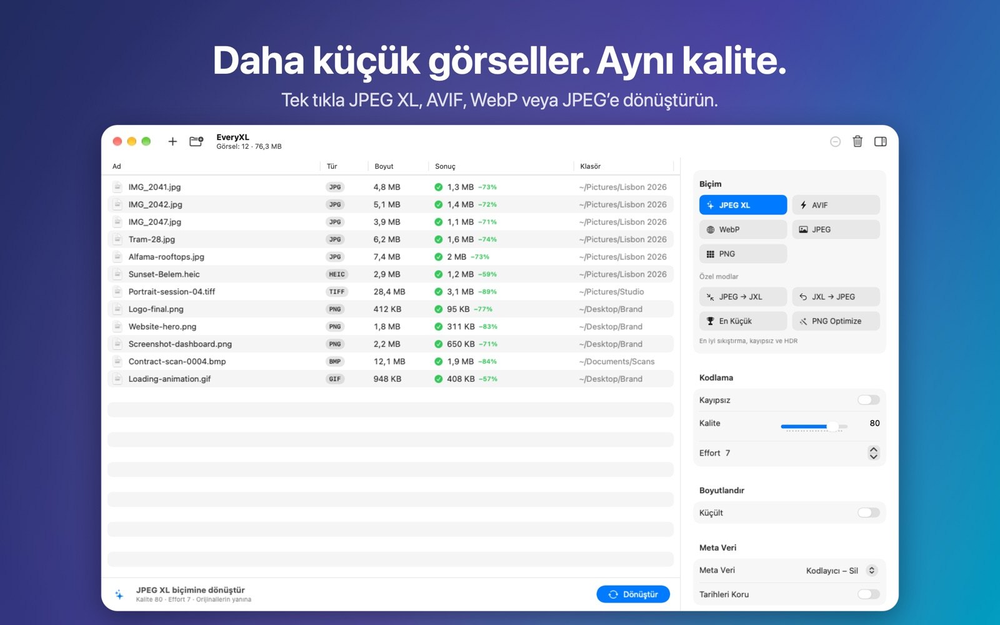

Daha küçük görseller. Aynı kalite.
Fotoğraflarınızı ve grafiklerinizi modern formatlarla küçültün. Klasörleri JPEG XL, AVIF, WebP veya JPEGLI’ye paralel dönüştürün; hızlı, gizli ve tamamen çevrimdışı.
Çok yakında Mac App Store’damacOS 14 veya üstü gerekir · Apple silicon ve Intel

Özellikler
Modern formatlar
JPEG XL, AVIF, WebP, JPEGLI ve PNG: aynı görsel kalitede daha küçük dosyalar.
Kayıpsız JPEG → JXL
JPEG’leri yaklaşık %20 küçültün, orijinali istediğiniz zaman bit bit geri getirin.
Toplu ve paralel
Klasörlerin tamamını bırakın. EveryXL Mac’inizin tüm çekirdeklerini kullanır.
Boyut ve meta veri
Altı boyutlandırma modu, EXIF/XMP/GPS kontrolü ve korunan tarihler.
Gizli
Her şey Mac’inizde çalışır. Hesap yok, yükleme yok, takip yok.
Yerel
SwiftUI ile macOS için geliştirildi, altı dilde.